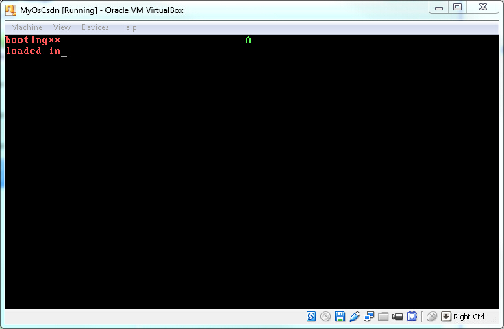
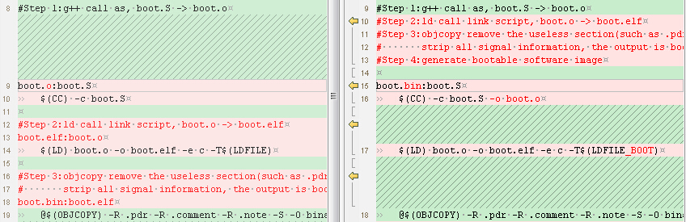
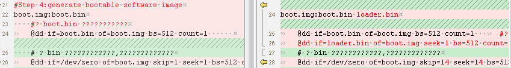

背景： 上文讲到，把操作系统挤到一个扇区里面实在是太委曲了。所以要跳出第一个扇区的限制。 实现方法就是： （1）把部分代码放到其它扇区 （2）加载其它扇区到内存 （3）跳转到其它扇区中要运行的第一条指令 在3中已经实现了第（2）步，加载扇区2-18至内存0x9000:0x1000处，这一节将介绍（1）和（3）
需求： 1.写一段测试代码，测试代码中包含打印信息（第一行屏幕中间打印‘A’），可以明确知道该代码是否执行到了 2.修改makefile，使测试代码经过编译、链接，最终放入img中从第二个扇区开始的位置 3.修改boot.S，在加载完其它扇区后，主动跳转到测试代码的第一条指令，并执行测试代码。
运行效果： 
代码： boot.S代码修改及说明： 第1处修改：
修改上一节中的一个BUG。 两个值相加的同时把结果存入寄存器会导致编译失败。 应该先把其中一个值存入寄存器，然后让寄存器加另一个值。
第2处修改：
根据上文已知，2-18扇区的数据已经读入到内存上从0x9000:0x0100开始的位置了，所以直接跳转到这个位置就可以了。
第3处修改：
此处省略N行
把BaseOfLoader和OffsetOfLoader的定义移到最前面去了，否则jmp OffsetOfLoader会提示错误。 但是指令是从上往下执行的。真正的第一条可执行指令是mov %cs, %ax这句，为了能正确找到第一条指令，在.set的前面加了一句跳转。
makefile代码修改及说明 第1处修改：
新增加一个链接脚本文件，因为需求中说明要新写一个测试代码，这个链接脚本文件就是给测试代码使用的。 为了表示区分，同时将原脚本文件定义为LDFILE_BOOT
第2处修改： 
这一部分没有做什么实质性的修改，只是把代码和注释移了一下位置。
第3修改： 此处增加了另一个文件loader.S的编译链接过程。 loader.S就是我们的测试代码。 loader.S的编译链接和boot.S是一样的，只是用的链接脚本不一样。
第4处修改：  第1个扇区仍然是存放boot.bin 第2-13个扇区存放的是loader.bin 剩余2866个扇区仍然为空
第5处修改：
这个makefile文件改好以后，很长一段时间内不会再去修改它了。
新增代码loader.S说明 完整源码：
.code16
.text
mov %cs, %ax
mov %ax, %ds
mov %ax, %es
mov %ax, %ss
mov {% math_inline %}0xb800, %ax
mov %ax, %gs
mov {% endmath_inline %}0xA, %ah
mov {% math_inline %}'A', %al
mov %ax, %gs:((80*0+39)*2)
jmp .
详细说明：
mov %cs, %ax
mov %ax, %ds
此处的%cs已经不是0了，而是0x9000，也就是这段代码的代码段。 在这个文件中，代码段和数据段仍然属于同一个段，因此也要把%ds设置为0x9000。 不过其实这段代码在今天的应用中，所有的数据都是立即数，并没有用到数据段，同样也没有用到%es和%ss，不写也没有关系。 但为了避免以后用到了导致代码出错，这里先加上了。
mov {% endmath_inline %}0xb800, %ax
mov %ax, %gs
mov {% math_inline %}0xA, %ah
mov {% endmath_inline %}'A', %al
mov %ax, %gs:((80*0+39)*2)
这一段是用于在屏幕上显示字符的，使用了与boot.S中不同的方法。
问：怎样显示字符？ 答：屏幕文件字符显示的缓冲区位置内存物理地址0xb8000-0xb8fff的区间内。其中0xb8000和0xb8001分别存放的是左上角第一个字符的颜色值和ASCII值。 我们所采用的显示字符方法就是：把字符放到内存中对应屏幕显示的位置去。
问：怎么计算屏幕坐标（行：x，列：y）对应的内存地址？ 在当前的显示模式中，一行宽度为80个字符，一个字符的宽度是8bit 屏幕位置(行：x，列：y)对应的内存地址就是0xb8000+(80(x-1)+y-1)2。 需求中所提到的第一行中间，就是0xb8000+(800+39)2的位置了。
问：怎么访问这个地址呢？ 答：我们把0xb800作为段基址，(800+39)2作为段偏移，就刚好得到了这个地址。
新增代码wind_x86 _dos.ld说明 完整源码：
SECTIONS
{
. = 0x0100;
.text :
{
*(.text)
} = 0
}
说明，这个脚本的内容和wind_x86.ld的内容几乎一样。只需要解释为什么起点是0x0100。 因为在DOS环境加调试汇编代码时要求起点是0x0100，这么写是为了兼容DOS中的汇编调试环境。